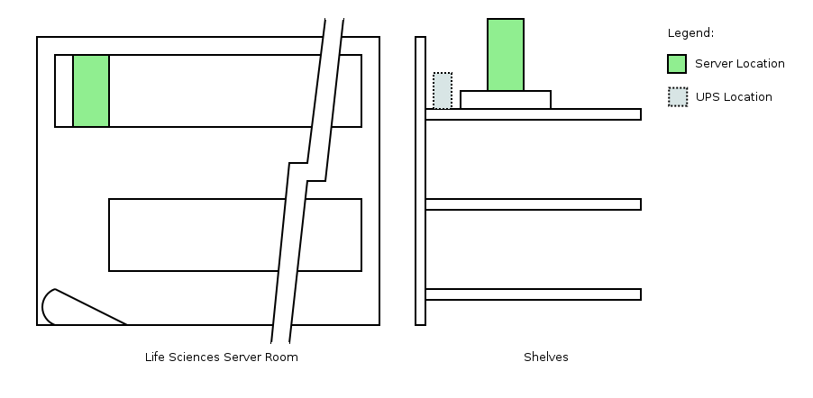

Alfred
Alfred is the most important server in the group. It acts as a gateway to the other servers in the room and serves as the NIS server. It also hosts websites that require more database space or heavy lifting as well as some internal tools.
Specifications
- Viglen built tower
- 2 x Intel(R) Xeon(R) CPU E5506 @ 2.13GHz (4 core)
- Ubuntu 14.04.5 LTS (trusty)
- 24GiB Memory
- 3.6TiB disk space (4 disks)
- 9.6mb GRUB
- md0: 1.8TiB RAID10 (/)
Services
- NIS Server
- Webserver (nginx)
- Database server (PostgreSQL)
Mounts
- /base (larder:/larder/homes)
- /mnt/backup (deptbck2.liv.ac.uk:/stage/bio_maglab/alfred)
IP Tables
| Open TCP Ports: | 21, 22, 24, 25, 53, 80, 443, 465, 8085-8089 |
|---|
| Open UDP Ports: | 53 |
|---|
| NAT: | MASQUERADE on eth0 |
|---|
Location
